| Bakır Anahtarı T1 | T1 | 5dk 0sn | Sv 1 | | 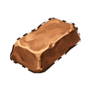 Bakır Külçesix1  Bakır Yumuşatıcı Çözeltisix1 Bakır Yumuşatıcı Çözeltisix1 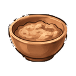 Bakır Usta Yemeğix1 |
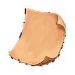 Bakır Tamir Kağıdı | T1 | 3dk 0sn | Sv 1 | | Bakır Külçesix1 Bakır Yumuşatıcı Çözeltisix1 Bakır Usta Yemeğix1 |
 Demir Anahtarı T2 Demir Anahtarı T2 | T2 | 10dk 0sn | Sv 7 | | 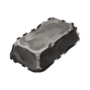 Demir Külçesix1  Demir Yumuşatıcı Çözeltisix1 Demir Yumuşatıcı Çözeltisix1 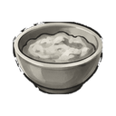 Demir Usta Yemeğix1 |
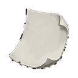 Demir Tamir Kağıdı | T2 | 3dk 0sn | Sv 7 | | Demir Külçesix1 Demir Yumuşatıcı Çözeltisix1 Demir Usta Yemeğix1 |
 Çelik Anahtarı T3 Çelik Anahtarı T3 | T3 | 30dk 0sn | Sv 15 | | 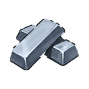 Çelik Külçesix1  Çelik Yumuşatıcı Çözeltisix1 Çelik Yumuşatıcı Çözeltisix1 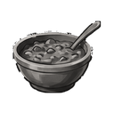 Çelik Usta Yemeğix1 |
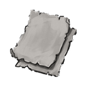 Çelik Tamir Kağıdı | T3 | 3dk 0sn | Sv 15 | | Çelik Külçesix1 Çelik Yumuşatıcı Çözeltisix1 Çelik Usta Yemeğix1 |
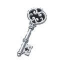 Gümüş Anahtarı T4 | T4 | 57dk 9sn | Sv 23 | 225 altın | 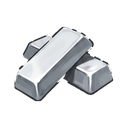 Gümüş Külçesix1  Gümüş Yumuşatıcı Çözeltisix1 Gümüş Yumuşatıcı Çözeltisix1 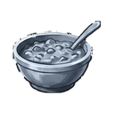 Gümüş Usta Yemeğix1 |
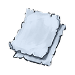 Gümüş Tamir Kağıdı | T4 | 1dk 0sn | Sv 23 | 110 altın | Gümüş Külçesix1 Gümüş Yumuşatıcı Çözeltisix1 Gümüş Usta Yemeğix1 |
 Altın Anahtarı T5 Altın Anahtarı T5 | T5 | 1sa 20dk | Sv 30 | 340 altın | 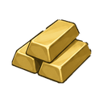 Altın Külçesix1  Altın Yumuşatıcı Çözeltisix1 Altın Yumuşatıcı Çözeltisix1 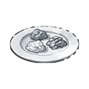 Altın Usta Yemeğix1 |
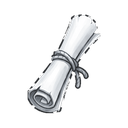 Altın Tamir Kağıdı | T5 | 1dk 0sn | Sv 30 | 170 altın | Altın Külçesix1 Altın Yumuşatıcı Çözeltisix1 Altın Usta Yemeğix1 |
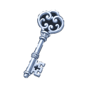 Platin Anahtarı T6 | T6 | 2sa 13dk | Sv 38 | 560 altın | 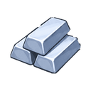 Platin Külçesix1  Platin Yumuşatıcı Çözeltisix1 Platin Yumuşatıcı Çözeltisix1 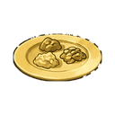 Platin Usta Yemeğix1 |
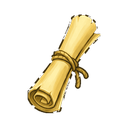 Platin Tamir Kağıdı | T6 | 1dk 0sn | Sv 38 | 280 altın | Platin Külçesix1 Platin Yumuşatıcı Çözeltisix1 Platin Usta Yemeğix1 |
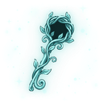 Selestit Anahtarı T7 | T7 | 3sa 20dk | Sv 45 | 900 altın | 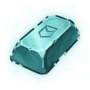 Selestit Külçesix1  Selestit Yumuşatıcı Çözeltisix1 Selestit Yumuşatıcı Çözeltisix1 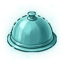 Selestit Usta Yemeğix1 |
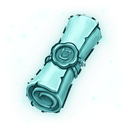 Selestit Tamir Kağıdı | T7 | 1dk 0sn | Sv 45 | 450 altın | Selestit Külçesix1 Selestit Yumuşatıcı Çözeltisix1 Selestit Usta Yemeğix1 |
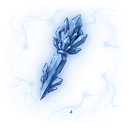 Adamantit Anahtarı T8 | T8 | 4sa 19dk | Sv 53 | 1.520 altın | 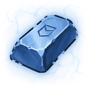 Adamantit Külçesix1  Adamantit Yumuşatıcı Çözeltisix1 Adamantit Yumuşatıcı Çözeltisix1 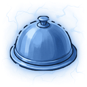 Adamantit Usta Yemeğix1 |
| Adamantit Tamir Kağıdı | T8 | 1dk 0sn | Sv 53 | 765 altın | Adamantit Külçesix1 Adamantit Yumuşatıcı Çözeltisix1 Adamantit Usta Yemeğix1 |
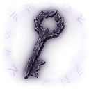 Obsidyen Anahtarı T9 | T9 | 5sa 42dk | Sv 60 | 2.475 altın | 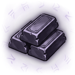 Obsidyen Külçesix1  Obsidyen Yumuşatıcı Çözeltisix1 Obsidyen Yumuşatıcı Çözeltisix1 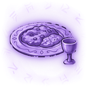 Obsidyen Usta Yemeğix1 |
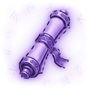 Obsidyen Tamir Kağıdı | T9 | 1dk 0sn | Sv 60 | 1.240 altın | Obsidyen Külçesix1 Obsidyen Yumuşatıcı Çözeltisix1 Obsidyen Usta Yemeğix1 |
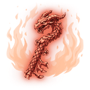 Flamerit Anahtarı T10 | T10 | 7sa 59dk | Sv 68 | 3.940 altın | 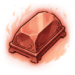 Flamerit Külçesix1  Flamerit Yumuşatıcı Çözeltisix1 Flamerit Yumuşatıcı Çözeltisix1 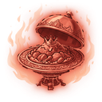 Flamerit Usta Yemeğix1 |
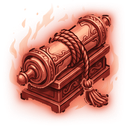 Flamerit Tamir Kağıdı | T10 | 1dk 0sn | Sv 68 | 1.970 altın | Flamerit Külçesix1 Flamerit Yumuşatıcı Çözeltisix1 Flamerit Usta Yemeğix1 |